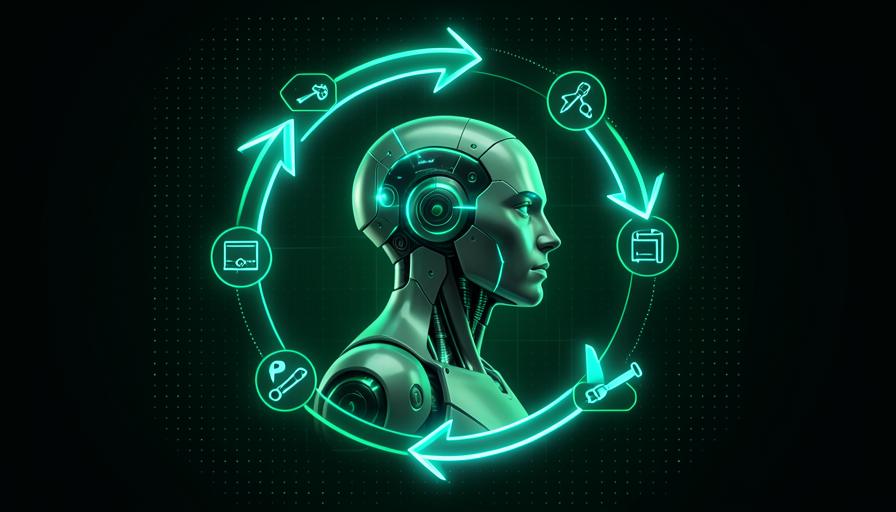

💡 New here? Three words before you start
- Agent — an AI that receives a goal and runs the steps on its own until it’s done, instead of just replying to a message.
- Tool — an action the agent can perform in the real world: search the web, open a file, run a command.
- Loop — the cycle in which the agent repeats "look, decide, act" several times until the task is done.
🆚 Agent vs. chatbot
You’ve already talked with an chatbot: you ask one thing, it answers one thing, and the conversation stops there. Each message is a separate round. Useful for getting an answer—but after that, the work is still yours.
One agent it’s something else. You don’t give it a question; you give it a goal — and it doesn’t need to be long. Three well-written sentences are worth more than a vague page.
🔑 The customer service analogy
Imagine walking into a store and meeting two kinds of people who can help you:
- •Chatbot = the attendant at the information desk: "where is X?" → it points it out. You go and take care of it.
- •Agent = the personal assistant: "solve this problem for me" → it walks into the store, chooses, pays, wraps it, and delivers it to you ready to go.

Key concepts
🧩 How it "thinks"
"Thinking" here is just an easy way to put it. Under the hood, the agent repeats a very simple cycle, with three steps that revolve around: observe the situation, decide the next step and act. Then it looks at the result and starts again.
Each cycle brings you a little closer to the goal. It's the same thing you do when assembling a piece of furniture: look at the part, decide where it fits, screw it in, check it—and move on to the next one. The agent does this very quickly and without getting tired.
💡 Tip to help it stick
When you see the agent “taking a while,” remember that it isn’t stuck—it’s going around this loop. Each lap is a little step it takes for you.
Key concepts
🛠️ Tools: the agent’s hands
On its own, an AI only speaks: it produces text. For it to do something in the world, you need tools — concrete actions someone gave it permission to use. Without tools, it’s a brain without hands.
The most common tools are easy to understand: find information on the web, open and edit a file, or run a command on your computer. A tool turns “I’d suggest doing X” into “X was done.”
📊 Everyday examples
- •Search the web: check a product’s current price before writing a proposal email.
- •Open/edit file: take your spreadsheet, fix one column, and save it back.
- •Run a command: test whether the site it built actually opens.
In module 1.3, you'll see where these tools come from (skills and MCP). For now, all you need to know is: they're the hands.
Key concepts
🔁 The Loop: It Tries Again on Its Own
Here’s the part that most surprises beginners: when one step goes wrong, the agent notices and tries another way — without you asking. It doesn’t give up at the first stumble; it returns to the cycle, observes what failed, and adjusts.
That’s exactly what makes it feel like it’s “really working.” Just like an employee: if the first door is locked, they don’t call you to ask what to do — they try the next one.
🎯 Receives the objective
"Find and download the May sales report."
⚙️ Try the first approach
Looks in the expected folder… the file isn’t there.
👀 Detects the failure and re-decides
"I couldn’t find it here. I’ll search for it by name across the whole system."
✅ Finish WITHOUT YOU ASKING
Finds the file in the other folder, downloads it, and lets you know when it's done.
🎯 Why this matters to you
This “trying again on its own” is what separates a tool from a colleague. But keep in mind: trying a lot doesn’t guarantee you’ll get it right. That’s why the next topic is about errors — and why you still need to check.
Key concepts
⚠️ When the agent gets it wrong
The agent is fast and persistent—but not infallible. Two mistakes are common. The first is hallucinate: making up information with complete confidence, as if it were true. The second is stay on the wrong path, repeating the same bad decision with conviction.
That’s why the conductor exists: you’re the one who checks the result. You don’t need to understand how it did it — you need to check whether the result makes sense. Learning to “sniff out” a suspicious result gets you halfway there.
✓ Signs of a good result
- ✓Matches what you know to be true
- ✓Show the source or the step you took
- ✓Admits when it’s unsure
- ✓The result opens and actually works
✗ Warning signs
- ✗Very specific data with no source at all
- ✗Too much confidence in something questionable
- ✗Repeats the same mistake several times
- ✗Names/links that seem "too good to be true"
💡 Practical tip
When you come across a number or name you don’t recognize, ask the agent itself: "where did you get that from? show me the source." If it got stuck or made something up, that was a hallucination.
Key concepts
⚙️ Agent vs. fixed automation
"But isn’t this just automation?" Not exactly. One fixed automation follows a track: it does exactly the steps someone programmed, in the programmed order. If the situation changes, it breaks or does something foolish—because it doesn’t know how to improvise.
One agent adapts. When the situation changes, it notices and chooses another step. Automation is a train on a track; an agent is a driver who steers around a pothole. Each is suited to a different purpose.
✓ Use an agent when…
- ✓The task varies from case to case
- ✓You have to make decisions along the way
- ✓Unexpected events are the rule, not the exception
- ✓You want to describe the goal, not every step
✗ Prefer fixed automation when…
- →The steps are always the same
- →You want total predictability
- →The volume is huge and repetitive
- →Mistakes must never happen
📊 Rule of thumb
A known, fixed path → automation. A path that changes and requires a choice → agent. In real life, the two usually work together: the agent makes decisions, and the automation handles the repetitive part.
✋ Before you continue — what makes a agent different from a chatbot or a fixed automation?
Key concepts
🎓 Module summary
Next module:
1.3 — 🔌 Skills, MCP, and the ecosystem: where the agent's tools and "talents" come from.